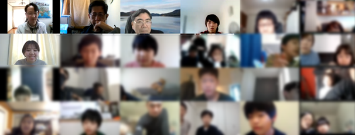
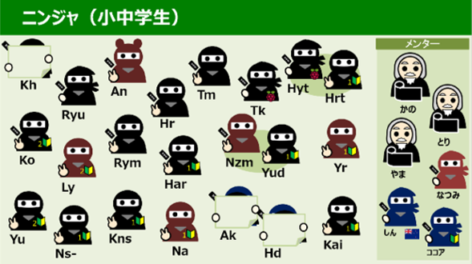
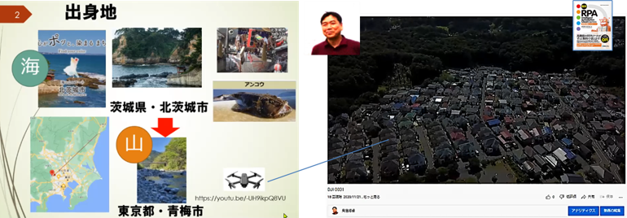
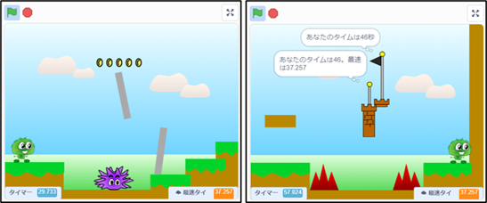
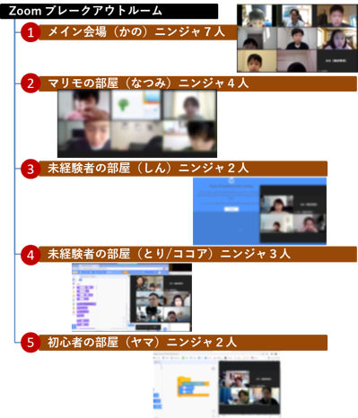
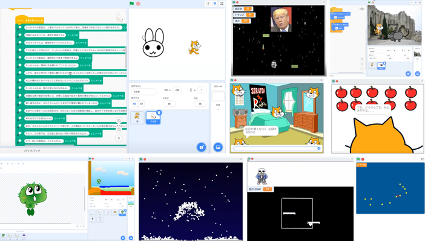
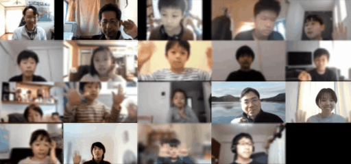

来月から新学年ですね。プログラミングの関心もきっと高くて、前回より10名以上も多いニンジャ22名がCoderDojo青梅に遊びに来てくれました。今日も、メンター5名が待つブレイクアウトルーム5つに分かれて、３つのテーマで楽しみます。テーマ１は、前回に続くスーパーマリモブラザーズ２（ツー）です。テーマ２のScratch未経験/初心者コースは、メンターによるレクチャーを豪華３部屋で開催。そしてテーマ３のメイン会場では自分でテーマを決めて作品制作をするベテランニンジャのみなさん。メンターのみなさんの協力もあって各小部屋でニンジャのみんなとたくさんお話もできました。

ニンジャ22組とメンター5名、そして保護者も参加して総勢30名以上がワークショップに参加。3名が当日欠席。メンターには初参加のココアくん。そして小学生ながらユースメンター希望者も現る。

鳥居塚さんです。集会場の予約など平日にもCoderDojo青梅の運営にご協力いただいているトリさん。出身地の茨城県の紹介、そしてプログラミングを始めたきっかけのFortranと最初のプログラムは詰将棋、趣味で撮影しているドローンの紹介もしてくれました。パソコンの自動化(RPA)の書籍も執筆してRPAの普及活動をしています。

２月の続編となるスーパーマリモブラザーズはパート２。今度のミッションはコインとゴールの旗をゲットすることでした。そして完成形はここから、最速37秒以上の記録にチャレンジしてください＜リンク＞。

ブレークアウトルームは５つの部屋に分かれて、それぞれのルームで同じテーマに取り組んでいます。どこの小部屋も楽しいので、出来ることなら全部に参加したいです。CoderDojo青梅はメンターが居てくれるから開催できるのだと、改めて実感。みんな本当にありがとうございます。

ニンジャの作品は、本当は怖い童謡の解説番組から始まって、某国のシューティングゲーム、15分での即興作品、今回初参加のニンジャは大きなネズミから逃げるScratchキャット、マリモ２改造は激ムズ・本物の地面を見つけないとクリアできないゲーム。などなど、12:00過ぎてもまだまだ発表は続きました。

ばいばーい。またねー。

子どもたちのScratch作品は↓ここで
CoderDojo青梅 Scratchスタジオ